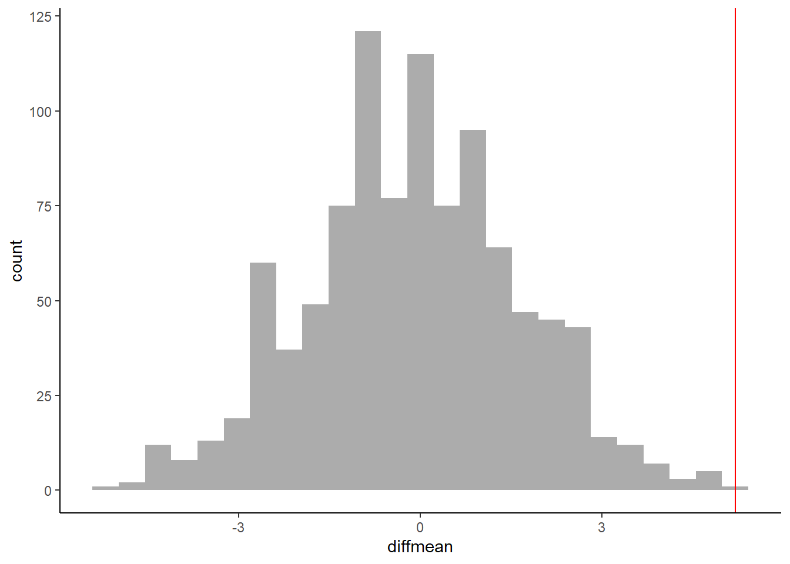
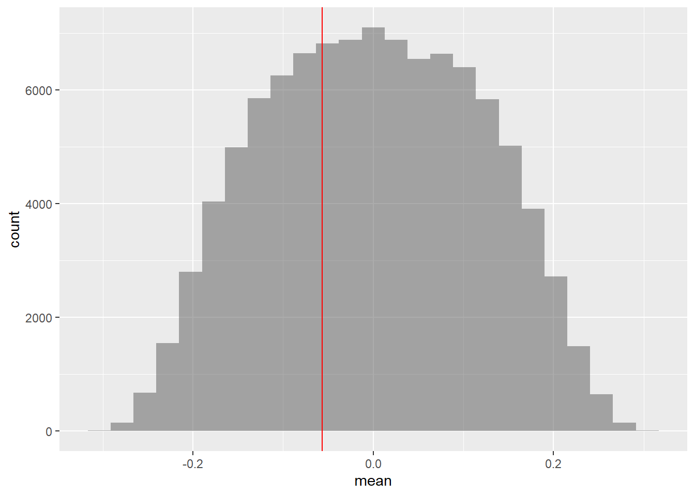

[1] 9 6 10 8 2 4 1 5 3 71 Slides and Tutorials
| R Tutorial | |
Radiant Tutorial | Datasets |
|---|
2 Introduction
We saw from the diagram created by Allen Downey that there is only one test! We will now use this philosophy to develop a technique that allows us to mechanize several Statistical Models in that way, with nearly identical code.
We will use two packages in R, mosaic and the relatively new infer package, to develop our intuition for what are called permutation based statistical tests.
3 Hypothesis Testing using Permutation
From Reference #1:
Hypothesis testing can be thought of as a 4-step process:
State the null and alternative hypotheses.
Compute a test statistic.
Determine the p-value.
Draw a conclusion.
In a traditional introductory statistics course, once this general framework has been mastered, the main work is in applying the correct formula to compute the standard test statistics in step 2 and using a table or computer to determine the p-value based on the known (usually approximate) theoretical distribution of the test statistic under the null hypothesis.
In a simulation-based approach, steps 2 and 3 change. In Step 2, it is no longer required that the test statistic be normalized to conform with a known, named distribution. Instead, natural test statistics, like the difference between two sample means \(y1 − y2\) can be used.
In Step 3, we use randomization to approximate the sampling distribution of the test statistic. Our lady tasting tea example demonstrates how this can be done from first principles. More typically, we will use randomization to create new simulated data sets ( “Parallel Worlds”) that are like our original data in some ways, but make the null hypothesis true. For each simulated data set, we calculate our test statistic, just as we did for the original sample. Together, this collection of test statistics computed from the simulated samples constitute our randomization distribution.
When creating a randomization distribution, we will attempt to satisfy 3 guiding principles.
Be consistent with the null hypothesis. We need to simulate a world in which the null hypothesis is true. If we don’t do this, we won’t be testing our null hypothesis.
Use the data in the original sample. The original data should shed light on some aspects of the distribution that are not determined by null hypothesis. For example, a null hypothesis about a mean doesn’t tell us about the shape of the population distribution, but the data give us some indication.
Reflect the way the original data were collected.
From Chihara and Hesterberg:
This is the core idea of statistical significance or classical hypothesis testing – to calculate how often pure random chance would give an effect as large as that observed in the data, in the absence of any real effect. If that probability is small enough, we conclude that the data provide convincing evidence of a real effect.
3.1 Permutations tests using mosaic::shuffle()
The mosaic package provides the shuffle() function as a synonym for sample(). When used without additional arguments, this will permute its first argument.
Applying shuffle() to an explanatory variable in a model allows us to test the null hypothesis that the explanatory variable has, in fact, no explanatory power. This idea can be used to test
- the equivalence of two or more means,
- the equivalence of two or more proportions,
- whether a regression parameter is 0.
We will now see examples of each of these models using Permutations.
4 Testing for Two or More Means
4.1 Case Study-1: Hot Wings Orders vs Gender (From Chihara and Hesterberg)
A student conducted a study of hot wings and beer consumption at a Bar. She asked patrons at the bar to record their consumption of hot wings and beer over the course of several hours. She wanted to know if people who ate more hot wings would then drink more beer. In addition, she investigated whether or not gender had an impact on hot wings or beer consumption. Is the mean order value related to the gender of the person who is ordering?
categorical variables:
name class levels n missing distribution
1 Gender factor 2 30 0 F (50%), M (50%)
quantitative variables:
name class min Q1 median Q3 max mean sd n missing
1 ID integer 1 8.25 15.5 22.75 30 15.50000 8.803408 30 0
2 Hotwings integer 4 8.00 12.5 15.50 21 11.93333 4.784554 30 0
3 Beer integer 0 24.00 30.0 36.00 48 26.20000 11.842064 30 0Let us calculate the observed difference in Hotwings consumption between Males and Females ( Gender): (using the mosaic package)
F M
9.333333 14.533333 diffmean
5.2 
The observed difference in mean consumption of Hotwings between Males and Females is 5.2. There is also a “visible” difference in medians as seen from the pair of box plots above.
Could this have occurred by chance? Here is our formulation of the Hypotheses:
\[
H_0: \mu_M\ = \mu_F\\
H_a: \mu_M\ \ne \mu_F\\
\]Note that we have a two-sided test: we want to check for differences in mean order value, either way. So we perform a Permutation Test to check: we create a null distribution of the differences in mean by a shuffle operation on gender:


prop_TRUE
0.001998002 The \(\color{red}{red\ line}\) shows the actual measured mean difference in Hot Wings consumption. The probability that our Permutation distribution is able to equal or exceed that number is \(0.001998002\) and we have to reject the Null Hypothesis that the means are identical.
4.2 Matched Pairs: Results from a diving championship.
Sometimes the data is collected on the same set of individual categories, e.g. scores by sport persons in two separate tournaments, or sales of identical items in two separate locations of a chain store. Here we have swimming records across a Semi-Final and a Final:
categorical variables:
name class levels n missing
1 Name factor 12 12 0
2 Country factor 8 12 0
distribution
1 SI Yajie (8.3%) ...
2 Canada (16.7%), China (16.7%) ...
quantitative variables:
name class min Q1 median Q3 max mean sd n
1 Semifinal numeric 313.70 322.2000 325.625 356.575 382.8 338.500 22.94946 12
2 Final numeric 283.35 318.5875 358.925 387.150 397.5 350.475 40.02204 12
missing
1 0
2 0The data is made up of paired observations per swimmer. So we need to take the difference between the two swim records for each swimmer and then shuffle the differences to either polarity. Another way to look at this is to shuffle the records between Semifinal and Final on a per Swimmer basis. There are 12 swimmers and therefore 12 paired records.
In order to ensure that the records are paired, we use the argument only.2=FALSE in the diffmean function:
318.7-313.7 320.55-318.7 322.75-320.55 325.5-322.75 325.75-325.5
12.350 -63.050 5.225 85.125 -114.150
346-325.75 355.15-346 360.85-355.15 367.5-360.85 382.8-367.5
102.200 -54.150 28.600 31.950 4.050 [1] 11.975How would we formulate our Hypothesis?
\[ H_0: \mu_{semifinal} = \mu_{final}\\ H_a: \mu_{semifinal} \ne \mu_{final}\ \]
[1] 1 1 1 1 1 1 -1 -1 -1 -1 -1 -1

prop_TRUE
0.1298787 Hmm…so by generating 100000 shufflings of score differences, with polarities, it does appear that we can not only obtain the current observed difference but even surpass it frequently. So it does seem that there is no difference in means between Semi-Final and Final swimming scores.
4.3 Walmart vs Target
Is there a difference in the price of Groceries sold by the two retailers Target and Walmart? The data set Groceries contains a sample of grocery items and their prices advertised on their respective web sites on one specific day.
- Inspect the data set, then explain why this is an example of matched pairs data.
- Compute summary statistics of the prices for each store.
- Conduct a permutation test to determine whether or not there is a difference in the mean prices.
- Create a
histogrambar-chart of the difference in prices. What is unusual about Quaker Oats Life cereal? - Redo the hypothesis test without this observation. Do you reach the same conclusion?
categorical variables:
name class levels n missing
1 Product character 30 30 0
2 Size character 24 30 0
3 Units character 16 30 0
4 UnitType character 3 30 0
distribution
1 Annie's Macaroni & Cheese (3.3%) ...
2 18oz (10%), 12oz (6.7%) ...
3 10 (10%), 15 (10%), 16 (10%) ...
4 oz (93.3%), bars (3.3%) ...
quantitative variables:
name class min Q1 median Q3 max mean sd n missing
1 Target numeric 0.99 1.8275 2.545 3.140 7.99 2.762333 1.582128 30 0
2 Walmart numeric 1.00 1.7600 2.340 2.955 6.98 2.705667 1.560211 30 0We see that the comparison is to be made between two prices for the same product, and hence this is one more example of paired data, as in Case Study #4. Let us plot the prices for the products:

We see that the price difference between Walmart and Target prices is highest for the Product named Quaker Oats Life Cereal Original. Let us check the mean difference in prices:
1-0.99 1.22-1 1.42-1.22 1.49-1.42 1.59-1.49 1.62-1.59 1.79-1.62 1.94-1.79
-0.580000 0.170000 0.210000 -0.100000 0.190000 0.070000 0.180000 0.160000
1.99-1.94 2.12-1.99 2.39-2.12 2.5-2.39 2.59-2.5 2.64-2.59 2.79-2.64 2.82-2.79
0.090000 0.010000 0.200000 0.600000 -0.200000 -0.600000 0.660000 0.040000
2.99-2.82 3.19-2.99 3.49-3.19 3.99-3.49 4.79-3.99 7.19-4.79 7.99-7.19
0.220000 1.263333 -1.183333 -0.480000 2.290000 2.190000 0.000000 [1] -0.05666667Let us perform the pair-wise permutation test on prices, by shuffling the two store names:
[1] 1 1 1 1 1 1 1 1 1 1 1 1 1 1 1 -1 -1 -1 -1 -1 -1 -1 -1 -1 -1
[26] -1 -1 -1 -1 -1
[1] 0Does not seem to be any significant difference in prices…
Suppose we knock off the Quaker Cereal data item…
[1] 2[1] -0.1558621
[1] 0.015065 Conclusion
It should be fairly clear now that we can test for the equivalence of two means, using a very simple permutation tests. Given computing power, we can always mechanize this test very quickly to get our results. And that performing this test yields reliable results without having to rely on any assumption relating to underlying distributions and so on.
6 References
- Randall Pruim, Nicholas J. Horton, Daniel T. Kaplan, Start Teaching with R
- https://bcs.wiley.com/he-bcs/Books?action=index&itemId=111941654X&bcsId=11307